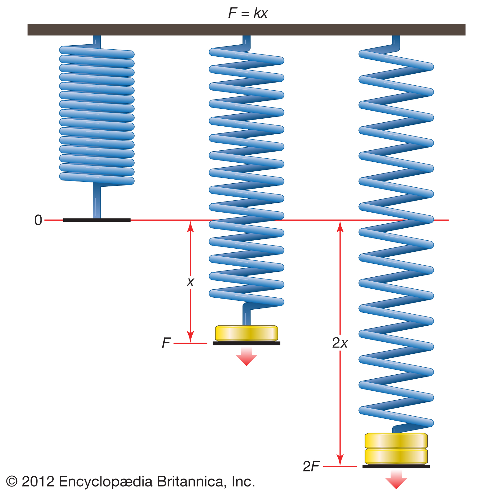
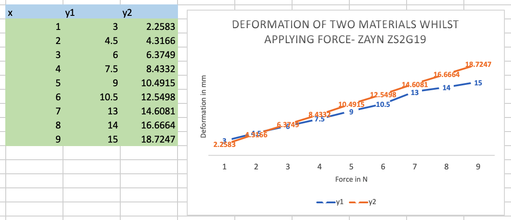
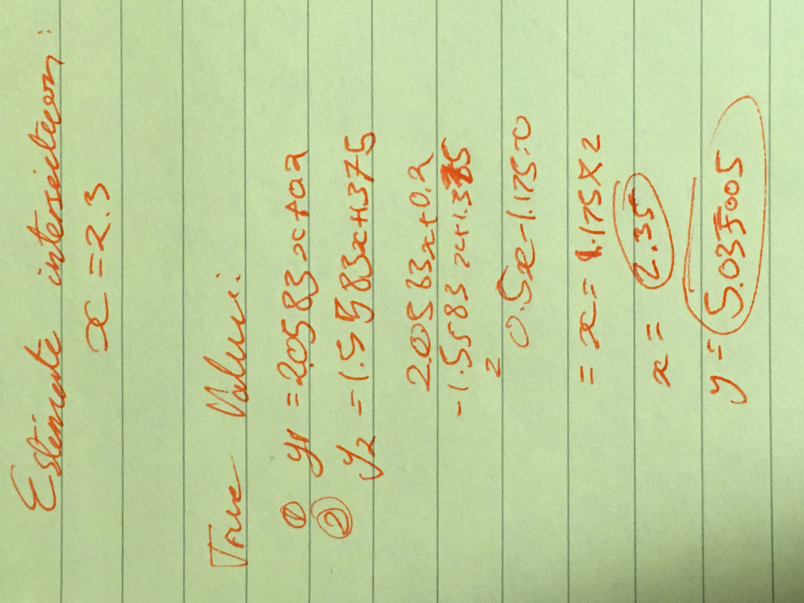
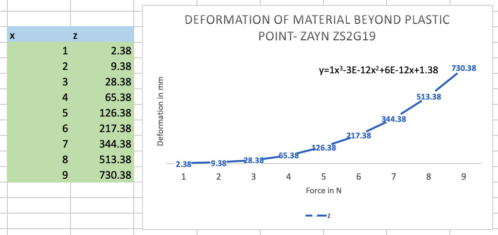

Robert Hooke was born on July 18th in 1635, the Isle of Wight. He was the physicist who discovered the law of Elasticity, also known as Hooke's law. [1]
The law states that “for relatively small deformations of an object, the displacement or size of the deformation is directly proportional to the deforming force or load. Under these conditions the object returns to its original shape and size upon removal of the load”
f = kx, where F is force (in N), k is a constant, and x is the extension of the material (in meters). [3]
The image above demonstrates this law in action, shown is the extension of the spring is equal to the force applied.
I carried out an experiment to test Hooke's law, with three different materials. y1,y2,and z. These materials were placed under force (in newtons), and the deformations (in millimeters).
The image above displays the results of our first experiment, X is the force applied in Newtons, Y1 and Y2 columns contain the deformations of each material respectively. The graphical representation of my results shows the deformation of both materials (Y1 and Y2) are linearly related to the force applied, indicating that Hooke's law is in fact valid. From these graphs, we can work out a linear equation for each line, in form of y = ax + b. For Y1, a =1.5583, and b= 1.375. For Y2, a=2.0583, and b = 0.2. Note the anomaly at x=7, where the point does not fit in with the trend.
The intersection point of the two lines can also be found using simultaneous equations, as shown below.
I estimated the x co-ordinate for the intersection to be 2.3 by looking at the chart and guessing the x value of when they intersect.
However, when I did calculate the x value using simultaneous equations, the x value was found to be 2.35 instead.
At x=2.35, the deformation of both materials is equal, which is approximately 5.04 mm.
I also tested a third material, called z. This material had force applied to it so that it was beyond it's 'plastic region'. The results of the experiment are shown in the image below.
The force applied (X) and the deformation (Z) are not linearly correlated.
This can be explained by the material going beyond its plastic region, and is now being permanently deformed by the force applied to it. When this occurs, we do not get a linear function and instead get a polynomial function, therefore Hooke's law is no longer valid in this case.
Once a material passed the region of plasticity, it becomes extremely difficult to predict it's behaviour. Some materials may snap, and some others may stretch.
Errors can occur in any experiment, and may explain erroneous results such as x=7 in the first experiment. Errors may come through inaccurate measurements of the material deformation. Perhaps another source of error may be equipment malfunctions, and or not being properly calibrated. There may have been error whilst applying force, meaning too much or too little might have been applied.
The results from the first experiment demonstrated Hooke's law, this is because they showed that there is a linear relationship between force applied and the deformation of the material. The second experiment showed that Hooke's law is only applicable while the material is within its plastic region, and force applied outside of that region will result in unexpected deformation. Although the first experiment had an erroneous data result, the experiment overall was successful as it did validate Hooke's law, by using the trend line.
[1]: https://www.britannica.com/biography/Robert-Hooke
[2]: https://www.britannica.com/science/Hookes-law
[3]: https://cdn.britannica.com/82/146782-050-AF0DE946/kx-law-Hooke-F-force-length-displacement.jpg
If I google my own full name, out of the top 10 results, 5 of them are directly related to me, being profiles I own such as Linkedin and instagram. One result was a friend of mine, who I have connected to via Keybase.
There are so many results relating to me, since my name is not common. My last name is rare, and my first name is at most uncommon. Personally I would prefer to have less direct results since it would make it more difficult to find information leading to me but I also see this as a pro in some cases. Potential pro's include ease for employers to find academic details about me and cons include most other people having this freedom. Ideally I wish nobody to see my details however it can't be helped. I have never been very active on facebook and this social media will not show any details that may hinder my career prospects. The social Media I am active on will have a username not relating to my real name and I will make extra effort to make sure there is no connection between them. My Linkedin is the first result, as much as I hate Linkedin, it might be helpful in the future so that being the first result is helpful.
I have Just setup a Google alert for my name, thanks for the heads up.
My Public Profile only shows my display picture, cover photo, Name and location. I am comfortable with this information as it shows just enough to enable one to know if this is the same Zayn as they may think it is, but not enough for one to to learn much about me. If an employer saw this page, I would feel okay, there is nothing to hide, even if my account was fully public.
The Facebook Friends Script didn't work for me unfortunately on multiple browsers.
I have my privacy settings set to Friends of friends, I may change this; unsure at the moment. It is a little concerning to think about the number of people that can see my posts, even if I don't have any posts.
The only two apps that have access to some of my data are Quizup and Patreon, I remember signing up to Quizup and playing the quizes years ago but I didn't know I used facebook at the time. Patreon I had no idea I signed up for it! I may have to remove these!